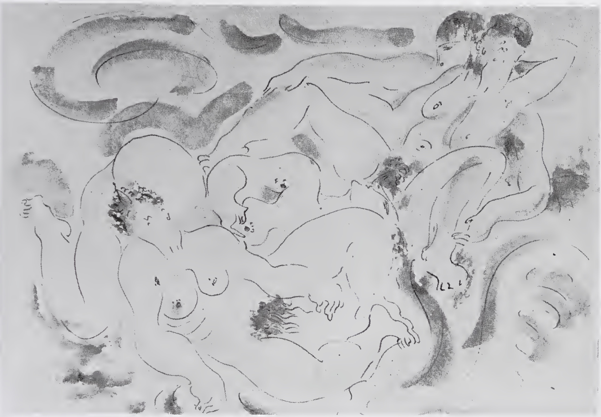

Lágrimas de Eros · Obra 96 de 124
Lesbos
André Masson (1922)

Dibujo de 1922, compañero del anterior, con cuerpos femeninos tendidos y entrelazados. En 1961 estaba en la Galerie Louise Leiris.
Lo que hace que destaque
Dibujo de 1922, compañero del anterior, con cuerpos femeninos tendidos y entrelazados. En 1961 estaba en la Galerie Louise Leiris.
Contexto histórico
Sin identificar en catálogos; sede actual desconocida. La imagen es la lámina de la edición inglesa de City Lights (1989), recortada de su página: no se ha encontrado ninguna reproducción de la obra. La foto de página que se le había asignado era la de «Los lazos rosas» de Delvaux, que ahora está en esa obra.
Autoría y procedencia
André Masson (1896-1987), pintor y dibujante francés, pionero del dibujo automático y uno de los artistas más intensos del surrealismo.
En los libros
Las lágrimas de Eros, de Georges Bataille · Lámina de la p. 173
Ficha pendiente de contrastar con fuentes académicas.